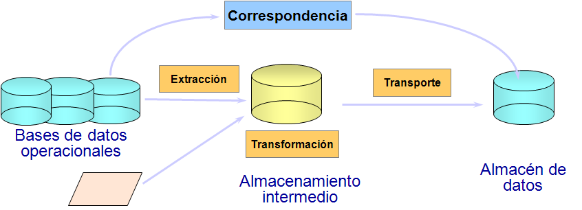
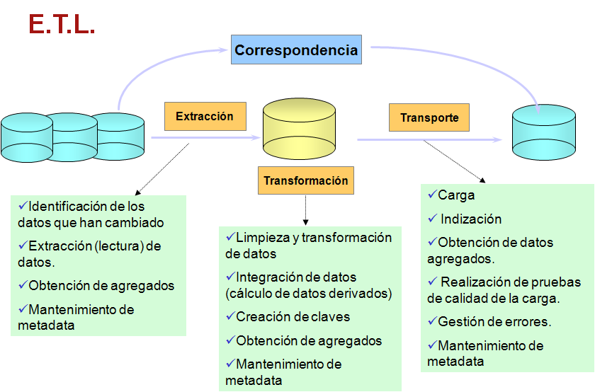
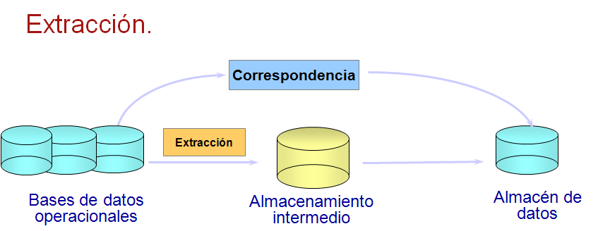
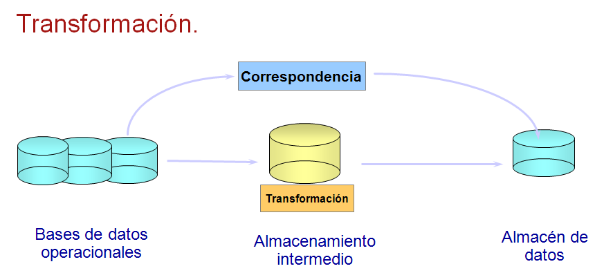
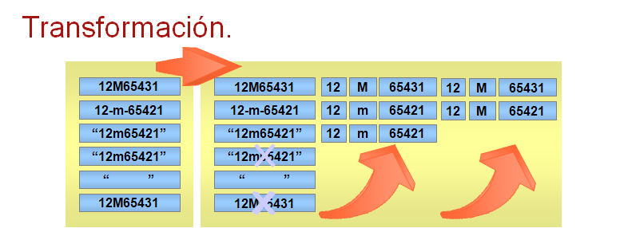
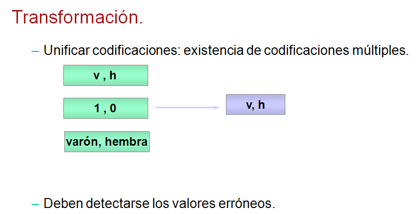
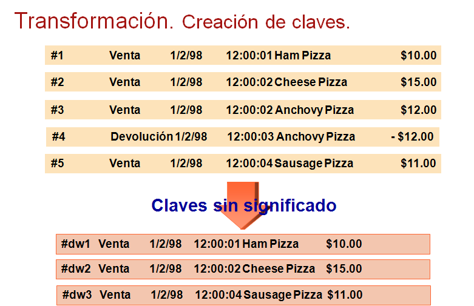
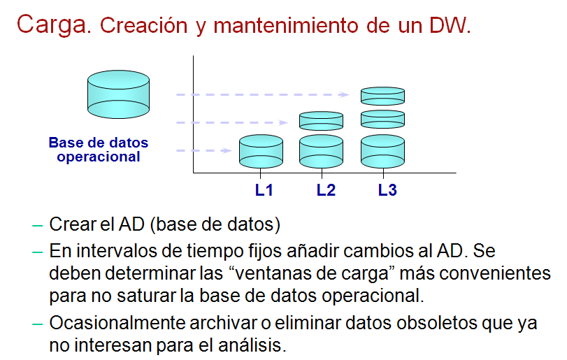

Lecturas
Herramientas ETL

Herramientas ETL
Definición.
ETL son las siglas en inglés de Extraer, Transformar y Cargar (Extract, Transform and Load). Es el proceso
que permite a las organizaciones mover datos desde múltiples fuentes, reformatearlos y limpiarlos, y
cargarlos en otra base de datos, data mart, o data warehouse para analizar, o en otro sistema operacional para apoyar un proceso de negocio.
Los procesos ETL también se pueden utilizar para la integración con sistemas heredados
(aplicaciones antiguas existentes en las organizaciones que se han de integrar con los nuevos aplicativos,
por ejemplo, ERP´s. La tecnología utilizada en dichas aplicaciones puede hacer dificil la integración con los nuevos programas).
(Tomado de:http://www.dataprix.com/blogs/respinosamilla/herramientas-etl-que-son-para-que-valen-productos-mas-conocidos-etl-s-open-sour)
Función.

Carga inicial. (initial load)
Mantenimiento o refresco periódico: inmediato, diario, semanal, mensual... (refreshment)
El Almacenamiento intermedio permite:
Realizar transformaciones sin paralizar las bases de datos operacionales y el almacén de datos.
Almacenar metadatos.
Facilitar la integración de fuentes externas.
La “calidad de los datos” es la clave del éxito de un almacén de datos.
Definir una estrategia de calidad:
Actuación sobre los sistemas operacionales: modificar las reglas de integridad,
los disparadores y las aplicaciones de los sistemas operacionales.
Documentación de las fuentes de datos.
Definición de un proceso de transformación.
Nombramiento de un responsable de calidad del sistema (Data Quality Manager).
Extracción.

Extracción: lectura de datos del sistema operacional.
a) durante la carga inicial.
b) mantenimiento del DW.
Ejecución de la extracción:
a) si los datos operacionales están mantenidos en un SGBDR, la extracción de datos se puede reducir a consultas en SQL o rutinas programadas.
b) si los datos operacionales están en un sistema propietario (no se conoce el formato de los datos) o en fuentes externas textuales, hipertextuales u hojas de cálculo, la extracción puede ser muy difícil y puede tener que realizarse a partir de informes o volcados de datos proporcionados por los propietarios que deberán ser procesados posteriormente.
Extracción: en el mantenimiento/refresco del DW. Antes de realizar la extracción es preciso Identificar los Cambios.
Identificación de Cambios.
Identificar los datos operacionales (relevantes) que han sufrido una modificación desde la fecha del último mantenimiento.
Métodos
Carga total: cada vez se empieza de cero.
Comparación de instancias de la base de datos operacional.
Uso de marcas de tiempo (time stamping) en los registros del sistema operacional.
Uso de disparadores en el sistema operacional.
Uso del fichero de log (gestión de transacciones) del sistema operacional.
Uso de técnicas mixtas.
Transformación.

Transformar los datos extraídos de las fuentes operacionales: limpieza, estandarización. (cleansing)
Calcular los datos derivados: aplicar las leyes de derivación. (integration).

En los datos operacionales existen anomalías: desarrollos independientes a lo largo del tiempo, fuentes heterogéneas, …
Eliminar anomalías:
Limpieza de datos: eliminar datos, corregir y completar datos, eliminar duplicados, ...
Estandarización: codificación, formatos, unidades de medida, ...

Transformacion: Creacion de claves
Carga.
Load. (carga).
La fase de Transporte consiste en mover los datos desde las fuentes operacionales o el almacenamiento
intermedio hasta el almacén de datos y cargar los datos en las correspondientes estructuras de datos.
La carga puede consumir mucho tiempo.

En la carga inicial del DW se mueven grandes volúmenes de datos.
En los mantenimientos periódicos del DW se mueven pequeños volúmenes de datos.
La frecuencia del mantenimiento periódico está determinada por el gránulo del DW y los requisitos de los usuarios.
Procesos posteriores a la carga.

Procesos posteriores a la carga.

(Tomado de: http://carlosproal.com/dw/dw05.html)